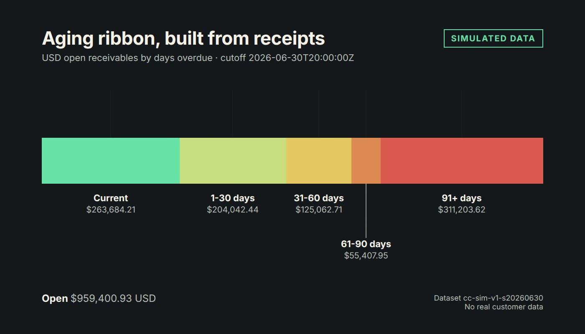

Dashboard · Accounts receivable · Collections · FastAPI · React · 2026-11
Which Customers Should a Collections Lead Contact Today, and How Much Cash Is Expected?
CashCompass: a synthetic accounts-receivable workbench. An independent SQL reference and a browser engine each compute open balances, exact aging buckets, disputed and undisputed amounts, and a cash forecast from explicit promises-to-pay, and their outputs are compared byte for byte on seven golden cutoffs. The Python API is checked against a hand-calculated fixture only. Nothing here is real data and nothing measures a real saving.
- Problem
- A collections lead needs to know which customers to contact today and why, and how much cash to expect in which week. Aging reports can hide disputed amounts, unapplied cash and promise…
- Role
- Built and written by Rishit Raj Mathur; the case study names its sources and checks.
- Tools
- Python 3.12 (stdlib-only seeded generator, Decimal money), PostgreSQL (guarded cc_* write functions, role grants, SQL reference oracle), FastAPI, TypeScript + React + Vite (engine replayed in a Web Worker), Playwright, axe-core, Lighthouse, Vitest, GitHub Actions only; no local build, HyperFrames and Remotion renders, openpyxl and LibreOffice workbook
- Status
- Case study with a live demo
- Evidence
- Open CashCompass · Code on GitHub

Everything is synthetic: 40 invented customers, 405 invoices and every figure come from a seeded generator (dataset cc-sim-v1-s20260630) with 49 declared defects kept in a separate file. The public site is a static demo; allocations, disputes, promises and tasks run in browser memory and are lost on reload. Forecast probabilities are assumptions. The API role header is a stand-in for authentication and the API is not hosted. The independent visual review at the release candidate did not give a final acceptance.
01The problem
A collections lead needs to know which customers to contact today and why, and how much cash to expect in which week. Aging reports can hide disputed amounts, unapplied cash and promise dates that passed without payment.
02What I built
A reconciled aging view, an account drilldown, a ranked collections queue, many-to-many allocations with reversal history, disputes, promises-to-pay, a forecast-versus-actual calibration screen and a reviewed export. Rules live in one written contract; the SQL reference and the browser engine produce the same numbers and are compared byte for byte on seven cutoffs, and the Python API is checked against the hand fixture.
03How it was built
- 01
The decision and the contract
One written contract fixes the ranking (oldest aging bucket, then undisputed collectible, then customer id), the bucket boundaries and what is out of scope: sending messages, payments, interest, FX and a predictive credit model.
- 02
A hand-calculated fixture before any volume
Known-answer cases (an open balance, a partial payment, an overpayment, a credit after cutoff, a duplicate receipt, a reopened dispute, a receipt reversal and allocation races) are asserted in SQL first. The manifest requires 96 of 96 cases.
- 03
Synthetic ledger with declared defects
A seeded generator writes the ledger, a defect manifest and a hash. Hidden payer behaviour never leaves the generator.
- 04
Two engines, one answer
The SQL reference and the browser engine are compared on seven golden files; the API is tested against the fixture. Excel recalculates 15,556 formula cells with zero differences.
- 05
Evidence, not assertion
Playwright runs 265 tests, axe finds no violations on ten routes, Lighthouse accessibility is 100. A reviewer read the renders; the last review said the release candidate was not yet visually release-ready.
04Results
Measured on the synthetic release candidate (commit 05ac3b5): 96 of 96 SQL cases, 61 API tests, 162 unit tests, 265 browser tests, 7 of 7 golden files byte-identical, workbook differences 0.00. USD open receivables on the latest cutoff are 959,400.93 across 102 invoices. These are properties of generated data and of this code; they say nothing about a real collections team.
05What I'd do next
- Fix the ribbon caption link contrast and re-read the landing renders.
- Publish the four evidence pages and the static site.
- Publish the edited executive memo and case study.
- Real authentication before any hosting.